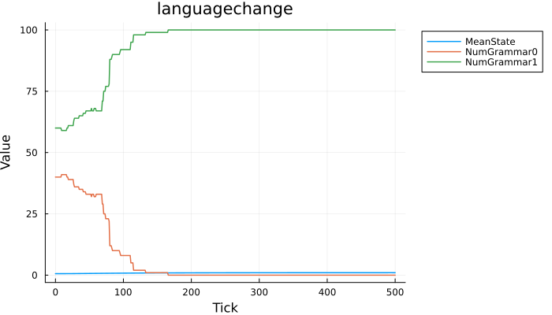
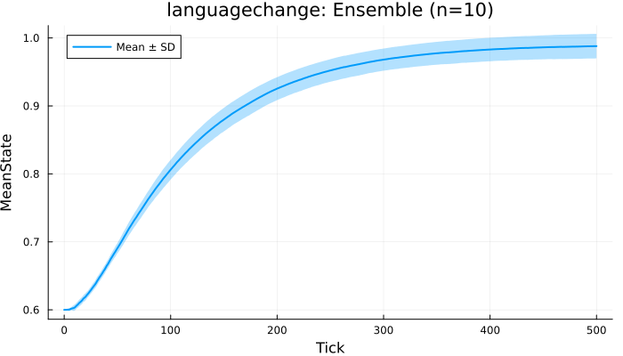
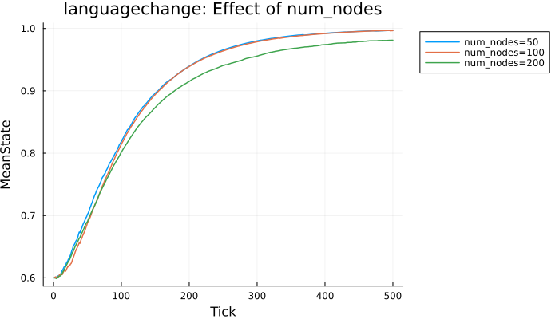

Language Change
Overview
WHAT IS IT?
This model explores how the properties of language users and the structure of their social networks can affect the course of language change.
In this model, there are two linguistic variants in competition within the social network – one variant generated by grammar 0 and the other generated by grammar 1. Language users interact with each other based on whom they are connected to in the network. At each iteration, each individual speaks by passing an utterance using either grammar 0 or grammar 1 to the neighbors in the network. Individuals then listen to their neighbors and change their grammars based on what they heard.
HOW IT WORKS
The networks in this model are constructed through the process of “preferential attachment” in which individuals enter the network one by one, and prefer to connect to those language users who already have many connections. This leads to the emergence of a few “hubs”, or language users who are very well connected; most other language users have very few connections.
There are three different options to control how language users listen and learn from their neighbors, listed in the UPDATE-ALGORITHM chooser. For two of these options, INDIVIDUAL and THRESHOLD, language users can only access one grammar at a time. Those that can only access grammar 1 are white in color, and those that can access only grammar 0 are black. For the third option, REWARD, each grammar is associated with a weight, which determines the language user’s probability of accessing that grammar. Because there are only two grammars in competition here, the weights are represented with a single value - the weight of grammar 1. The color of the nodes reflect this probability; the larger the weight of grammar 1, the lighter the node.
INDIVIDUAL: Language users choose one of their neighbors randomly, and adopt that neighbor’s grammar.
THRESHOLD: Language users adopt grammar 1 if some proportion of their neighbors is already using grammar 1. This proportion is set with the THRESHOLD-VAL slider. For example, if THRESHOLD-VAL is 0.30, then an individual will adopt grammar 1 if at least 30% of his neighbors have grammar 1.
REWARD: Language users update their probability of using one grammar or the other. In this algorithm, if an individual hears an utterance from grammar 1, the individual’s weight of grammar 1 is increased, and they will be more likely to use that grammar in the next iteration. Similarly, hearing an utterance from grammar 0 increases the likelihood of using grammar 0 in the next iteration.
THINGS TO NOTICE
Over time, language users tend to arrive at using just one grammar all of the time. However, they may not all converge to the same grammar. It is possible for sub-groups to emerge, which may be seen as the formation of different dialects.
THINGS TO TRY
Under what conditions is it possible to get one grammar to spread through the entire network? Try manipulating PERCENT-GRAMMAR-1, the updating algorithm, and the various other parameters. Does the number of nodes matter?
EXTENDING THE MODEL
Whether or not two language users interact with each other is determined by the network structure. How would the model behave if language users were connected by a small-world network rather than a preferential attachment network?
In this model, only two grammars are in competition in the network. Try extending the model to allow competition between three grammars.
The updating algorithm currently has agents updating asynchronously. Currently, the grammar may spread one step or several within one tick, depending on the links. Try implementing synchronous updating.
Regardless of the updating algorithm, language users always start out using one grammar categorically (that is, with a weight of 0 or 1). Edit the model to allow some language users to be initialized to an intermediate weight (e.g., 0.5).
NETLOGO FEATURES
Networks are represented using turtles (nodes) and links. In NetLogo, both turtles and links are agents.
RELATED MODELS
Preferential Attachment
CREDITS AND REFERENCES
This model was also described in Troutman, Celina; Clark, Brady; and Goldrick, Matthew (2008) “Social networks and intraspeaker variation during periods of language change,” University of Pennsylvania Working Papers in Linguistics: Vol. 14: Issue 1, Article 25. https://repository.upenn.edu/pwpl/vol14/iss1/25/
HOW TO CITE
If you mention this model or the NetLogo software in a publication, we ask that you include the citations below.
For the model itself:
- Troutman, C. and Wilensky, U. (2007). NetLogo Language Change model. http://ccl.northwestern.edu/netlogo/models/LanguageChange. Center for Connected Learning and Computer-Based Modeling, Northwestern University, Evanston, IL.
Please cite the NetLogo software as:
- Wilensky, U. (1999). NetLogo. http://ccl.northwestern.edu/netlogo/. Center for Connected Learning and Computer-Based Modeling, Northwestern University, Evanston, IL.
COPYRIGHT AND LICENSE
Copyright 2007 Uri Wilensky.

This model is licensed under the Creative Commons Attribution-NonCommercial-ShareAlike 3.0 License. To view a copy of this license, visit https://creativecommons.org/licenses/by-nc-sa/3.0/ or send a letter to Creative Commons, 559 Nathan Abbott Way, Stanford, California 94305, USA.
NetLogo itself is free software for non-commercial use under the terms of the GNU General Public License (see full license information here).
To inquire about commercial licenses for either NetLogo or specific models from the models library, please contact netlogo-commercial-admin@ccl.northwestern.edu.
Parameters
| Parameter | Type | Default | Description |
|---|---|---|---|
num_nodes | Int | 100 | num nodes |
percent_grammar_1 | Float64 | 60.0 | percent starting with grammar 1 |
update_algorithm | Symbol | :reward | :threshold, :individual, or :reward |
threshold_val | Float64 | 0.3 | threshold val |
alpha | Float64 | 0.025 | alpha |
logistic | Bool | true | logistic |
sink_state_1 | Bool | false | sink state 1 |
max_ticks | Int | 500 | max ticks |
Source Code
The Julia code to run this model:
using ArkModelZoo
_, trajectory = run_languagechange()Time Series

Ensemble Runs
Ten replicates with different random seeds, showing mean ± standard deviation.

Parameter Sensitivity
Varying num_nodes.

Appendix: Source Code
This model is implemented in the Ark.jl Entity-Component-System (ECS) framework. The code is split into five files, each with a distinct role:
- Parameters: a mutable struct holding all configurable values.
- Components: lightweight data types attached to individual entities (agents).
- Resources: world-level shared state accessible to all systems.
- Systems: functions that operate on entities each tick, defining model behavior.
- Model: wiring that assembles the world, registers resources and systems, and provides the run entry point.
Parameters (parameters.jl)
The parameter struct uses @kwdef so that every field has a default value and can be overridden by keyword. These defaults match the original NetLogo model’s slider settings.
Base.@kwdef mutable struct LCParams
num_nodes::Int = 100
percent_grammar_1::Float64 = 60.0 # percent starting with grammar 1
update_algorithm::Symbol = :reward # :threshold, :individual, or :reward
threshold_val::Float64 = 0.3
alpha::Float64 = 0.025
logistic::Bool = true
sink_state_1::Bool = false
max_ticks::Int = 500
seed::Int = 42
endComponents (components.jl)
Components are lightweight data types attached to individual entities (agents). Mutable structs hold per-entity state, while empty tag structs act as markers for the ECS query system to efficiently filter entities.
mutable struct LCNode
state::Float64 # 0.0 to 1.0, grammar state
spoken_state::Float64 # 0 or 1 after speaking
node_idx::Int # index in network
end
LCNode() = LCNode(0.0, 0.0, 0)Resources (resources.jl)
Resources are world-level singletons shared across all systems, used for global state and aggregate statistics.
# Network stored as adjacency list
mutable struct LCNetwork
neighbors::Vector{Vector{Int}} # index -> list of neighbor indices
node_entities::Vector{Entity} # index -> entity
end
LCNetwork() = LCNetwork(Vector{Int}[], Entity[])
mutable struct LCStats
mean_state::Float64
num_grammar_0::Int
num_grammar_1::Int
end
LCStats() = LCStats(0.0, 0, 0)Systems (systems.jl)
Systems contain the model logic and execute in a defined order each tick. Each system struct implements either initialize! (run once at setup) or update! (run every tick).
# --- Initialization ---
struct InitLCSystem <: System end
function initialize!(::InitLCSystem, world::World)
params = get_resource(world, LCParams)
rng = get_resource(world, RNGResource).rng
network = get_resource(world, LCNetwork)
n = params.num_nodes
network.neighbors = [Int[] for _ in 1:n]
network.node_entities = Vector{Entity}(undef, n)
# Create nodes
for i in 1:n
eid = new_entity!(world, (LCNode(0.0, 0.0, i),))
network.node_entities[i] = eid
end
# Distribute grammars: percent_grammar_1% start with state=1.0
num_g1 = round(Int, params.percent_grammar_1 / 100.0 * n)
indices = collect(1:n)
Random.shuffle!(rng, indices)
for i in 1:num_g1
node = get_components(world, network.node_entities[indices[i]], (LCNode,))[1]
node.state = 1.0
node.spoken_state = 1.0
end
# Create preferential attachment network
# Start with edge between node 1 and 2
if n >= 2
_lc_add_edge!(network, 1, 2)
end
connected = Set{Int}([1, 2])
unconnected = collect(3:n)
Random.shuffle!(rng, unconnected)
for new_node in unconnected
# Find partner via preferential attachment
partner = _lc_find_partner(rng, network, connected)
_lc_add_edge!(network, new_node, partner)
push!(connected, new_node)
end
_lc_update_stats!(world)
return nothing
end
function _lc_add_edge!(network::LCNetwork, i::Int, j::Int)
push!(network.neighbors[i], j)
push!(network.neighbors[j], i)
end
function _lc_find_partner(rng, network::LCNetwork, connected::Set{Int})
# Preferential attachment: probability proportional to degree
nodes = collect(connected)
degrees = [length(network.neighbors[n]) for n in nodes]
total = sum(degrees)
if total == 0
return nodes[rand(rng, 1:length(nodes))]
end
pick = rand(rng) * total
cumsum = 0.0
for (idx, n) in enumerate(nodes)
cumsum += degrees[idx]
if cumsum >= pick
return n
end
end
return nodes[end]
end
function _lc_update_stats!(world::World)
stats = get_resource(world, LCStats)
total = 0.0
n = 0
ng0 = 0
ng1 = 0
for (_, nodes) in Query(world, (LCNode,))
@inbounds for i in eachindex(nodes)
total += nodes[i].state
n += 1
if nodes[i].state >= 0.5
ng1 += 1
else
ng0 += 1
end
end
end
stats.mean_state = n > 0 ? total / n : 0.0
stats.num_grammar_0 = ng0
stats.num_grammar_1 = ng1
end
# --- Go ---
struct LCGoSystem <: System end
function update!(::LCGoSystem, world::World)
params = get_resource(world, LCParams)
rng = get_resource(world, RNGResource).rng
network = get_resource(world, LCNetwork)
# Collect nodes for shuffled ask
node_indices = collect(1:length(network.node_entities))
Random.shuffle!(rng, node_indices)
if params.update_algorithm == :threshold
for idx in node_indices
node = get_components(world, network.node_entities[idx], (LCNode,))[1]
nbrs = network.neighbors[idx]
if isempty(nbrs)
continue
end
grammar_one_sum = 0.0
for nb in nbrs
nb_node = get_components(world, network.node_entities[nb], (LCNode,))[1]
grammar_one_sum += nb_node.state
end
if grammar_one_sum >= length(nbrs) * params.threshold_val
node.state = 1.0
else
if !params.sink_state_1
node.state = 0.0
end
end
end
elseif params.update_algorithm == :individual
for idx in node_indices
node = get_components(world, network.node_entities[idx], (LCNode,))[1]
nbrs = network.neighbors[idx]
isempty(nbrs) && continue
nb = nbrs[rand(rng, 1:length(nbrs))]
nb_node = get_components(world, network.node_entities[nb], (LCNode,))[1]
node.state = nb_node.state
end
elseif params.update_algorithm == :reward
# Speak phase
for idx in node_indices
node = get_components(world, network.node_entities[idx], (LCNode,))[1]
if params.logistic
gain = (params.alpha + 0.1) * 20.0
filter_val = 1.0 / (1.0 + exp(-(gain * node.state - 1.0) * 5.0))
node.spoken_state = rand(rng) <= filter_val ? 1.0 : 0.0
else
biased_val = min(1.5 * node.state, 1.0)
node.spoken_state = rand(rng) <= biased_val ? 1.0 : 0.0
end
end
# Listen phase
for idx in node_indices
node = get_components(world, network.node_entities[idx], (LCNode,))[1]
nbrs = network.neighbors[idx]
for nb in nbrs
nb_node = get_components(world, network.node_entities[nb], (LCNode,))[1]
heard = nb_node.spoken_state
gamma = 0.01
if rand(rng) <= node.state
if heard == 1.0
node.state += gamma * (1.0 - node.state)
else
node.state = (1.0 - gamma) * node.state
end
else
if heard == 0.0
node.state = node.state * (1.0 - gamma)
else
node.state = gamma + node.state * (1.0 - gamma)
end
end
end
end
end
_lc_update_stats!(world)
return nothing
end
# --- Termination ---
struct LCTerminationSystem <: System end
function update!(::LCTerminationSystem, world::World)
params = get_resource(world, LCParams)
tick = get_resource(world, Tick)
if tick.tick + 1 >= params.max_ticks
get_resource(world, Terminate).stop = true
end
return nothing
endModel (model.jl)
The model file assembles all pieces: it creates the ECS World with the required component types, registers resources, builds the Scheduler with systems in execution order, and exposes the public run entry point. The observer pattern records the trajectory each tick.
function languagechange_world(; initial_capacity::Int = 4096)
return World(LCNode; initial_capacity = initial_capacity, allow_mutable = true)
end
function languagechange_systems()
return (InitLCSystem(), LCGoSystem(), LCTerminationSystem())
end
function languagechange_model(params::LCParams = LCParams())
world = languagechange_world()
_add_standard_resources!(world, params)
add_resource!(world, LCNetwork())
add_resource!(world, LCStats())
scheduler = Scheduler(world, languagechange_systems())
initialize!(scheduler)
return scheduler
end
struct LCObserver end
function languagechange_headers(::LCObserver)
return ["MeanState", "NumGrammar0", "NumGrammar1"]
end
function languagechange_values(::LCObserver, world::World)
stats = get_resource(world, LCStats)
return Float64[stats.mean_state, Float64(stats.num_grammar_0), Float64(stats.num_grammar_1)]
end
function run_languagechange(; params::LCParams = LCParams(), observe::Bool = true)
return _run_model(languagechange_model, LCObserver(), languagechange_values; params, observe)
end